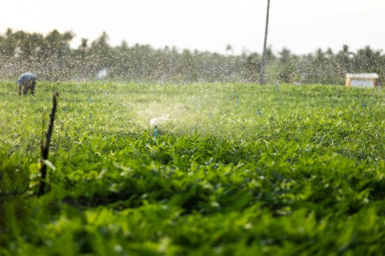

Home / Agriculture and produce
Website designsIrrigation and pumps websites.
Irrigation and pumps. Irrigation design, Pumps and bores, Installation.
See it working before you pay.
Every design below is a real site. Yours is built the same way, with your name, words, colours and photos.
Pick a layout
Change it live: tap anything and watch the preview
Open this design full sizeGet this designThese are real working sites, not pictures. Scroll inside them and press their buttons, or open one full size.
Every layout.
Tap a layout to see who it suits, then show it in the preview.
Big photo, darkA large photo fills the top of the page with your headline over it. Dark menu bar.
Best for
Businesses with strong job photos: builders, fabricators, transport.
The first screen
Your best photo across the full screen, your headline over it, and a call or quote button.
Pick it if
Your photos are your best salesman.
Big photo, lightThe same large photo at the top, with a white menu bar and lighter sections.
Best for
Clinics, professional firms and anyone who wants to feel open and clean.
The first screen
The same full-width photo, with a white menu bar and light sections below.
Pick it if
You want big photos but a lighter, friendlier feel.
Words beside a photoYour headline on the left and a large photo on the right, on your brand colour.
Best for
Firms that need to say a lot clearly: engineers, accountants, lawyers.
The first screen
Your headline and button on the left, a large photo on the right, on your brand colour.
Pick it if
Your words matter as much as your pictures.
Your work firstOpens with three of your best jobs, then a large photo and short story for each.
Best for
Builders, landscapers, joiners and anyone judged on finished work.
The first screen
Three of your best jobs side by side, each opening its own story.
Pick it if
Customers hire you after seeing what you have built.
Dark and modernDark from top to bottom, with a quote box right beside your headline.
Best for
Industrial, mining, electrical and tech-heavy businesses.
The first screen
A dark page with your headline and a quote box right beside it.
Pick it if
You want to look modern, serious and big.
Warm and friendlyCream background, classic lettering and a framed photo. Feels personal.
Best for
Wineries, stays, cafes, family businesses and health practices.
The first screen
A cream background, classic lettering and a framed photo.
Pick it if
People choose you for the people and the place.
Numbers firstNo big photo. Leads with your headline and key numbers, then a ranked list of services.
Best for
Established firms with track record to prove: years, jobs, staff, sites.
The first screen
Your headline and key numbers, then a ranked list of services. No big photo.
Pick it if
Your numbers already tell the story.
Book straight awayA booking box sits in the top photo, and every service has its own book button.
Best for
Workshops, clinics, tours and stays: anything booked by the slot.
The first screen
A booking box in the top photo, and a book button on every service.
Pick it if
Most visitors come to book, not to browse.
A door for each serviceOne short statement, then four large photo panels, one for each main service.
Best for
Businesses with three or four distinct services or divisions.
The first screen
One short line, then large photo panels, one per main service.
Pick it if
Different customers come for different things.
Find it fastA search box and big buttons for what people come to do, then every service A to Z.
Best for
Businesses with lots of services, parts or stock.
The first screen
A search box and big buttons for common jobs, then every service A to Z.
Pick it if
Customers know what they want and need to find it fast.
Your people firstOpens with your team, then your promises and a careers section.
Best for
Firms that are hiring or that win work on their people.
The first screen
Your team first, then your promises and a careers section.
Pick it if
Your people are why customers stay, and you need more of them.
One bold lineOne very large headline on a plain page with a strip of photos. Calm and premium.
Best for
Premium brands: architects, boutique stays, high-end trades.
The first screen
One very large headline on a plain page with a strip of photos.
Pick it if
You want calm, confident and expensive.
Stock firstA search bar and your latest stock at the top, with price, kilometres and a price-drop tag on every card.
Best for
Car, caravan, boat and machinery dealers: anyone selling stock.
The first screen
A search bar over a short photo, then your latest stock with price, kilometres and a price-drop tag on every card.
Pick it if
Buyers come to browse what you have, and a rough weekly repayment helps them decide.
Inside this website.
Every irrigation and pumps site starts with these five pages. Tap one to see what is on it.
HomeThe first page most people see
What is on it
Your headline, one main button, your key numbers, your top services (irrigation design, pumps and bores, installation) and recent work.
Why it matters
Most people see this page first, usually on a phone. It has a few seconds to show what you do and how to reach you.
ServicesEvery job you do, explained
What is on it
Each service with a photo and a short plain description: irrigation design, pumps and bores, installation, tanks and pipe, automation, repairs and servicing.
Why it matters
People search for the exact job they need. One clear line per service helps them, and helps Google match you to the search.
SeasonsProof of your work
What is on it
Your jobs with photos, filtered by type: horticulture, grazing, councils, mining.
Why it matters
Proof beats promises. Bigger customers want to see work like theirs before they call.
AboutWho they are dealing with
What is on it
Your story, your team, your licences and accreditations, and the areas you cover.
Why it matters
Bigger customers check who they are dealing with. This page answers that before they ask.
ContactWhere every page leads
What is on it
Phone, email, opening hours, a map and a quote form that asks the right questions.
Why it matters
Every other page points here, so it has to work in one tap on a phone.
What an irrigation and pumps site must do.
Tap each one to see why it matters and how we build it.
Cellar door and bookingsOpening hours, tastings and functions, with a booking or enquiry button.
Why it matters
Opening hours, tastings and functions, with a booking or enquiry button.
How we build it
Opening hours in the top bar, and a booking or enquiry button on every page.
Sell onlineA wine club or online shop linked from every page.
Why it matters
A wine club or online shop linked from every page.
How we build it
A clear Shop or Wine club button in the menu, linked to the shop system you already use.
Wholesale enquiriesA simple path for buyers, packers and markets.
Why it matters
A simple path for buyers, packers and markets.
How we build it
A separate enquiry form for trade buyers, so it never mixes with visitor questions.
Seasonal workA harvest jobs page that fills itself with applications.
Why it matters
A harvest jobs page that fills itself with applications.
How we build it
A Harvest jobs page with dates, pay and an apply form that works on a phone.
And everything else changes too.
Colours, headings and shapes change in the preview above. These change as well.
01Top bar
Light or dark, with your phone number and opening hours.
02Corners and buttons
Sharp or rounded corners. Pill or square buttons.
03Top of the home page
A full-width photo or video, or words beside a photo.
04Sections
Show, hide or reorder any section: numbers, about, services, photos, projects, steps, branches, reviews, questions.
05Pages
Add a page for each service, careers, branches, questions, a capability statement and more.
06Your words and photos
Every word and photo is replaced with your own. Nothing generic stays.
Similar businesses.
See the same website made for a business like yours.
Ready to see your three designs?
The brief takes about ten minutes.